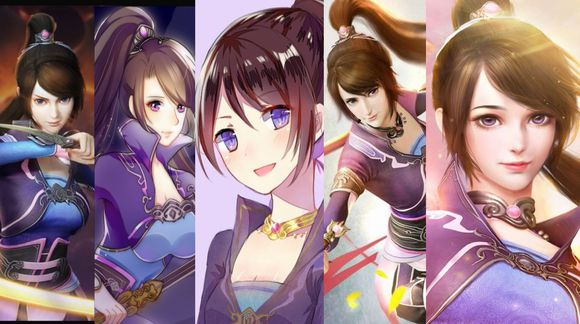

资料加载中...
2020-01-14 05:25
你是司空琪，鲜衣怒马，快意恩仇，长夜漫漫无所惧;
你是司空琪，烈烈真性，玉骨冰心，不卑不亢脉脉情。
数年多磨难，风雨独自搀。
辗转非所怨，甘苦与谁言?
你坚毅刚强，侠骨柔情。生于虎狼宗家，你没有锦衣玉食，没有嘘寒问暖，没有笑语和阳光。环绕在你身边的，从始至终都是亲人间的勾心斗角，叔父的利用，少主的觊觎。然而正是这般逆境，才造就了你这么优秀，这么坚强果敢的女孩。一剑一匕首，紫衣清丽，行事洒脱干练，打斗间潇洒自如。即使面对刚劲的对手，即使被打伤在地，即使鲜血洒落，你也仍会扶剑而起，听不见丝毫呻吟，甚至就连一声服软也不屑说出。然后呢?你会继续奔赴下一程旅途，下一个敌人。
你如野蔷薇般美丽倔强，凛冽纤丽，惊才绝艳。

你冰雪聪明，明眸善睐。面对澹台真人，你想到的不是硬拼，而是利用手中的尸蝉，不费一兵一卒让局面反败为胜，同时解救他人。二叔无情的胁迫，多年前真相的水落石出，在心灰意冷过后反将一军，扭转战局。你的神情冷静如冰雪，一抹浅笑昭示着你的胜利;你的眸子燃烧着愤恨，一挥手一顿足，往事如烟烟消云散。眉目如画，顾盼生辉，你的容颜下隐藏的睿智，是如此动人。

你数年跋涉，毫不放弃。你可曾祈求过上苍的垂怜，把运气分给你一点点?豆蔻年华间本该有父亲的垂怜，而你的父亲却很多年前就患了痴症。几句执着，千里奔赴一笑而过，案上残红风雨吹落。你的背后孤冷，你的心头沉疴，多少年来一个人默默承受着。拜师学艺，试炼尸蝉无悔，不过是想让父亲再温柔地唤你一声阿琪。中宵梦醒，几个夜晚辗转难眠，几次幻梦灭，你在父亲得病上花了那么多心思，心疼你的理解你的又有几人?
你重情重义，柔情于何。聚散匆匆，因果无常。前尘如梦，一行清泪一缕柔情。
妹妹在你眼前化为冰晶，烟消云散，再也不见;师傅在你眼前血焰吞噬，湮灭飞灰，参商永隔。父亲瘫痪，等待你的还有两个重要亲人的毁灭，尸骨无存。你的痛哭，你的慌乱，你的仇恨与重生。迫切想要抓住的，不过是指间沙，稍纵即逝。自此，能与你分享酸甜苦辣，能懂得你的伤痕累累的人化做了风。
别后相思空一水，重来回首已三生啊。

珠帘锁玉，雪褪窗沿，你独倚高楼，冷月寒霜倾世醉;
梨花白雪，曲径通幽，你紫杉素雅，春花秋月笑温良。
你入这江湖的初衷，不过是想救你的父亲。自此经历过的所有风霜雨雪，刀光剑影，我不曾见你惧怕过。你独立，坚强，从未想过逃避什么。你的这一份初心，我们愿共同珍惜，珍惜你这么好的姑娘。
江湖风雨，几度阑珊。沧海一粟，愿君一剑轻安。
念君跋涉影寂寞，
司世抚鞘夜婆娑。
空尔前尘因果执，
琪语瑶华情思摹。